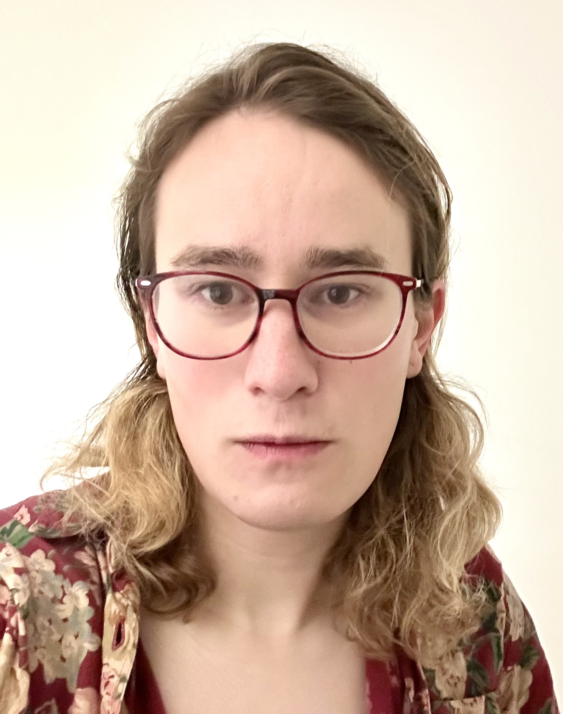
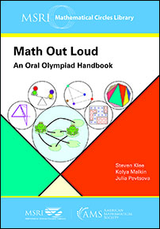

Esmeralda S. Whitammer
|
||
|
 Me last winter. Portrait chronically out of date.How to address / refer to meNameEsmeralda for all purposes. I used a different name in the past, but it should not be used to refer to me. My old website is archived here and the change is explained here. Please see that page for guidance on how to refer to my past work and publications. Pronounsshe or they ContactCommunication is accepted in English, French, Russian, and occasionally other languages. Address
Informatics Forum 2.27 esmeralda [dot] whitammer [at] ed [dot] ac [dot] uk Other profiles
GitHub and old GitHub
Math(s) Out Loud
 Available from the American Mathematical Society or Amazon. |
What I do
Since July 2024: Chancellor's Fellow @ University of Edinburgh, School of Informatics Bayesian machine learning • neurosymbolic methods • ML for scientific reasoningI study algorithms for probabilistic modelling and inference, as well as deep learning-based reasoning, and their applications. Expand for some themes of my work
See here for a list of publications and invited talks. TeachingIn the spring of 2026 I gave a course on Advanced Topics in Machine Learning, newly designed with Slava Borovitskiy and Rik Sarkar. My portion (deep generative modelling) was created with the help of assistants Kirill Tamogashev and Rajit Rajpal. Materials are available here. In October-November 2024 I taught a mini-course on diffusion probabilistic models, largely coinciding with weeks 8-11 of the above course. The prior distributionBefore moving to Edinburgh, I was a postdoc at Mila – Québec AI institute and Department of Informatics and Operations Research, Université de Montréal, where I was fortunate to work with Prof. Yoshua Bengio and also to collaborate with Profs. Aaron Courville, Gauthier Gidel, and Guillaume Lajoie, among others: Expand for collaborators and studentsI have also been lucky to work with many fellow postdoctoctoral researchers (including Kilian Fatras, Alex Hernández-García, Pablo Lemos, Alex Tong) and M.S./Ph.D. students and interns (including Tristan Deleu, Edward Hu, Moksh Jain, Minsu Kim, Salem Lahlou, Jarrid Rector-Brooks, Alexandra Volokhova, Dinghuai Zhang, among many others). I was formally trained as a pure mathematician: at the University of Washington (Seattle) (B.S., 2015) and Yale University (M.S. and Ph.D., 2021). In addition, I believe many individuals and societies could benefit from a dose of friendly mathematical education. Some organizations I have been involved in: UW Math Circles (Seattle), Math-M-Addicts (New York City). I am also a coauthor of this collection of problems and puzzles. Short bio in third person(Feel free to use if needed for talks and similar.) Esmeralda S. Whitammer is a Chancellor's Fellow in Informatics at the University of Edinburgh and a fellow of CIFAR's Learning in Machines and Brains programme. Her research focuses on algorithms for probabilistic inference and Bayesian machine learning, with applications in generative modelling, neurosymbolic methods, and machine reasoning. Within machine learning, Esmeralda's work explores modelling of Bayesian posteriors over high-dimensional and structured variables, induction and discovery of compositional structure in generative models, and neurosymbolic methods for uncertainty-aware reasoning in language and formal systems. Her work has found applications in pure and applied sciences, including inverse imaging, remote sensing, discovery of novel biological and chemical structures, and, most recently, robot control. Dr Whitammer holds a PhD in mathematics from Yale University (2021) and was previously a postdoctoral researcher at Mila – Québec AI Institute in Montréal (2021 to 2024). |
StudentsCurrent studentsI am fortunate to be primary or co-primary PhD supervisor to:
I have worked with other students in Edinburgh in various capacities, including Logan Mondal Bhamidipaty, Nicola Branchini, Giwon Hong, Ben Sanati, Andreas Sochopoulos. Prospective studentsI am always looking for motivated students to fill fully-funded PhD positions in the School of Informatics, University of Edinburgh. Interested students should contact me to discuss research directions and the application processes for the various degree programmes that I can supervise. For international students, it is now too late to apply for entry in September 2026. Ideally, you should write before November 2026 to be considered for all available opportunities for entry in September 2027. Expand for detailsResearch topics are in the areas of Bayesian machine learning (including probabilistic reasoning in language, generative models, and neurosymbolic methods) and applications in the sciences. I am especially happy to work with students who have a strong background in mathematics and an interest in robust and interpretable ML. Please see my research interests and recent publications for examples of the kind of work we might do together. Studentships include:
The typical length of a PhD in the UK is 3-3.5 years. All students have at least one secondary supervisor – please let me know if you have a specific person or lab in mind – and there are many opportunities for collaboration. (I regret that I cannot engage in individual discussions with everyone who contacts me, despite my best intentions. If I do not respond, please remind me. However, I am unlikely to answer messages that are hallucinated by a language model, which account for an increasing number and help me to finetune my classifier of such messages, or messages that deadname/misgender me, a clear sign of not having read this page. No need for polished essays! I just want to know about you, your interests, and how you think we might work together.) On diversity and inclusionDiverse perspectives shape impactful research. If you have an unusual education history, come from an ethnic/cultural minority, or identify as a woman, non-binary person, or queer individual, and you are interested in working with me, I especially encourage you to apply and to mention this if you feel comfortable doing so. I am committed to maintaining an inclusive environment for everyone I interact with and to considering ethics and fairness in both collaboration choices and research topics. I participate in and contribute to the activities of Women in Machine Learning and Queer in AI, groups that take direct action to reduce barriers to participation in our field. |